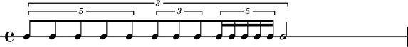
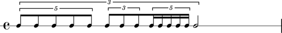
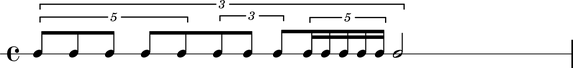
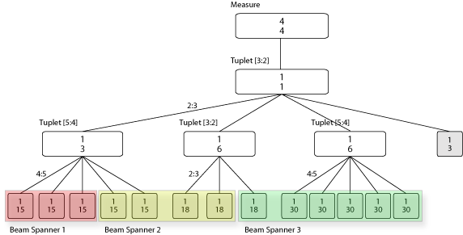

Leaf, Container, Spanner, Indicator¶
At the heart of Abjad’s Symbolic Score-Control lies a powerful model that we call the Leaf Container Spanner Indicator, or LCSI, model of the musical score.
The LCSI model can be schematically visualized as a superposition of two complementary and completely independent layers of structure: a tree that includes the Containers and the Leaves, and a layer of free floating connectors or Spanners.

There can be any number of Spanners, they may overlap, and they may connect to different levels of the tree hierarchy. The spanners attach to the elements of the tree, so a tree structure must exist for spanners to be made manifest.
Example 1¶
To understand the whys and hows of the LCSI model implemented in Abjad, it is probably easier to base the discussion on concrete musical examples. Let’s begin with a simple and rather abstract musical fragment: a measure with nested tuplets.

What we see in this little fragment is a measure with 4/4 meter, 14 notes and four tuplet brackets prolating the notes. The three bottom tuplets (with ratios 5:4, 3:2, 5:4) prolate all but the last note. The topmost tuplet prolates all the notes in the measure and combines with the bottom three tuplets to doubly prolate all but the last note. The topmost tuplet as thus prolates three tuplets, each of which in turn prolates a group of notes. We can think of a tuplet as containing notes or other tuplets or both. Thus, in our example, the topmost tuplet contains three tuplets and a half note. Each of the tuplets contained by the topmost tuplet in turn contains five, three, and five notes respectively. If we add the measure, then we have a measure that contains a tuplet that contains tuplets that contain notes. The structure of the measure with nested tuplets as we have just described it has two important properties:
It is a hierarchical structure.
It follows exclusive membership, meaning that each element in the hierarchy (a note, a tuplet or a measure) has one and only one parent. In other words a single note is not contained in more than one tuplet simultaneously, and no one tuplet is contained in more than one other tuplet at the same time.
What we are describing here is a tree, and it is the structure of Abjad containers.
While this tree structure seem like the right way to represent the relationships between the elements of a score, it is not enough. Consider the tuplet example again with the following beaming alternatives:
Beaming alternative 1:
Beaming alternative 2:
Beaming alternative 3:
Clearly the beaming of notes can be totally independent from the tuplet groupings. Beaming across tuplet groups implies beaming across nodes in the tree structure, which means that the beams do not adhere to the exclusive (parenthood) membership characteristic of the tree. Beams must then be modeled independently as a separate and complementary structure. These are the Abjad spanners.
Below we have the score of our tuplet example with alternative beaming and its the Leaf-Container-Spanner graph. Notice that the colored blocks represent spanners.
Beaming alternative 3 (graph):
Example 2¶
As a second example let’s look at the last five measures of Bartók’s Wandering from Mikrokosmos vol. III. As simple as it may seem, these five measures carry with them a lot of information pertaining to musical notation.
Note
Please refer to the Bartok example for a step by step construction of the musical fragment and its full Abjad code.
There are many musical signs of different types on the pages: notes, dynamics, clefs, staves, slurs, etc. These signs are structurally related to each other in different ways. Let’s start by looking at the larger picture. The piano piece is written in two staves. As is customary, the staves are graphically grouped with a large curly brace attaching to them at the beginning or each system. Notice that each staff has a variety of signs associated with it. There are notes printed on the staff lines as well as meter indications and bar lines. Each note, for example, is in one and only one staff. A note is never in two staves at the same time. This is also true for measures. A measure in the top staff is not simultaneously drawn on the top staff and the bottom staff. It is better to think of each staff as having its own set of measures. Notice also that the notes in each staff fall within the region of one and only one measure, i.e. measures seem to contain notes. There is not one note that is at once in two measures (this is standard practice in musical notation, but it need not always be the case.)
As we continue describing the relationships between the musical signs in the page, we begin to discover a certain structure, or a convenient way of structuring the score for conceptualization and manipulation. All the music in a piano score seems to be written in what we might call a staff group. The staff group is composed of two staves. Each staff in turn appears to be composed of a series or measures, and each measure is composed of a series of notes. So again we find that the score structure can be organized hierarchically as a tree. This tree structure looks like this:

Notice again though that there are elements in the score that imply and require a different kind of grouping. The two four eighth-note runs in the lower staff are beamed together across the bar line and, based on our tree structure, across tree nodes. So do the slurs, the dynamics markings and the ritardando indication at the top of the score. As we have seen in the tuplets example, all these groups running across the tree structure can be defined with spanners.